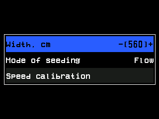

Seeding machine parameters
The submenu with the working width and the control modes of the Hectare Mini, what changing them does to the statistics, and where the two menu calibrations start.
“Settings” → “Seeding machine parameters”, “Agronomist” level (Enable the Agronomist level). Set these first on a new machine — every figure of area and rate is worked out from them.

- “Width, cm” — the selected item.
- Its value between -[ and ]+: “PLUS” / “MINUS” step it, “MENU” opens the number pad.
- “Mode of seeding”.
- Its value, here “Flow”.
- “Speed calibration” — starts the calibration of the speed sensor.
| Item | What it does | Range · default |
|---|---|---|
| “Width, cm” | The working width of the machine. The area, and every rate per hectare, is worked out from it. Always enter it. | 100 … 2500 cm · 560 |
| “Mode of seeding” | How the seed sensors are controlled and shown: “Flow” — seeds per second, for grain drills; “Hybrid” — seeds per metre, possible on grain drills but not used in practice; “Precise” — seeds per metre with skips and doubles, for precision planters. | · “Flow” |
| “Mode of fertilizers” | The same three modes for the fertilizer sensors. Shown only with fertilizer sensors in the profile. | · “Flow” |
| “Mode of liq.fert.” | “Flow” or “By area” for the liquid fertilizer sensors. Shown only with such sensors and no pump controller. | · “By area” |
| “Tramline” | The tramline settings — Set up the tramline rhythm. Shown only if the machine can make tramlines. | submenu |
| “Relation of sensors to actuators” | Which seed lines each tramline actuator or motor shuts off. Shown only when that is not one to one. | screen |
| “Speed calibration” | Calibrate the speed sensor. | — |
| “Dispenser calibration” | Calibrate the dispenser rotation for “ALL” dispensers or for one, by its number. Shown only with dispenser sensors in the profile. | “ALL”, 1 … number of dispensers |
| “Reset to defaults” | “Service” level. Returns the width and the modes to their defaults. | — |
Without a speed sensor in the profile the three mode items and “Speed calibration” are hidden: the panel can only work in “Flow”.
The target rate is set on the home screen, not here — Change the target rate. Its range follows the mode: “Flow” 1 to 1500 seeds per second, “Hybrid” 1 to 200 seeds per metre, “Precise” 0.5 to 50.0 seeds per metre.
What a change does to the statistics
A change between “Flow” and “Hybrid” keeps the statistics.
The two modes depend on each other: the fertilizer sensors can run in “Precise” only while the seed sensors do. The panel refuses the other combinations with a message that names the item to change first. When both run in “Precise”, the fertilizer sensors become a second seed group, and the items read “Mode of seeding gr.A” and “Mode of seeding gr.B”.
If a product dosed by weight is then claimed both by a dispenser sensor and by a motor, the panel switches “Weight control” of the dispenser sensors off and says so in a “WARNING!” window.
Something your machine does that this page does not answer? Write to support@agriwelt.com — an engineer answers.